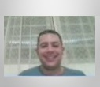

Sobre o Projeto integrador V
O Projeto Integrador V, foi desenvolvendo dentro de um condomínio situado na região de Guarulhos,
assim a nossa comunidade externa foi um grupo de condôminos que aceitaram escutar a nossa proposta,
em um primeiro momento conversamos com o sindico o senhor Anderson que observou a potencialidade do
nosso projeto no sentindo de ajudar os moradores a reduzir o preço alto pago por mês nas contas de luz,
pauta essa que já tinha sido alvo de reclamações pelos condôminos, em um segundo momento conversamos com
a sindica a senhora Ester que assinou as autorizações pertinentes a aplicação e desenvolvimento do
PI V da UNIVESP, colocando uma única condição que preservássemos os dados do condomínio assim como
os dados pessoais dos condôminos, mas se colocou à disposição para esclarecer qualquer questão
relacionada a pesquisa, bem como, foi nossa guia nas visitas de campo.
A aplicação web Viva + foi desenvolvida com o objetivo de ..............., focada no acompanhamento do
consumo energético................
Ela oferece aos usuários conteúdos relevantes sobre o tema, incentivando práticas sustentáveis de consumo de energia,
que podem resultar em benefícios financeiros e ambientais,
além de colaborar para o desenvolvimento e a conscientização sobre o uso saudável e consciente da energia.
Agora que você já conheceu um pouco sobre o site "Viva +", aproveite para conhecer os alunos idealizadores
do projeto.
Desenvolvendores do projeto
Luís Paulo da Silva de Siqueira é formado no Curso Superior de Tecnologia em Gestão de Recursos Humanos pela UBC-Universidade Braz Cubas em Mogi das Cruzes-SP (2015), também é formado no curso de Licenciatura Plena em Pedagogia pela UNIVESP-Universidade Virtual do Estado de São Paulo em Mogi das Cruzes-SP (2022), possui Pós-Graduação Lato Sensu em MBA-Master of Business Administration em Liderança e Coaching para Gestão de Pessoas pela UNOPAR-Universidade Norte do Paraná em Londrina-PR (2017), também possui Pós-Graduação Lato Sensu no curso de Especialização em Matemática, suas Tecnologias e o Mundo do Trabalho pela UFPI-Universidade Federal do Piauí, em Teresina-PI (2022), também possui Pós-Graduação Lato Sensu no curso de Especialização em Currículo e Prática Docente nos Anos Iniciais do Ensino Fundamental, em Teresina-PI (2024), atualmente é aluno do curso de Bacharelado em Tecnologia da Informação - ênfase em internet das coisas pela UNIVESP-Universidade Virtual do Estado de São Paulo em Salesópolis-SP com término previsto para agosto de 2025, também é aluno do curso de Bacharelado em Engenharia de Computação pela UNIVESP-Universidade Virtual do Estado de São Paulo em Salesópolis-SP com término previsto para agosto de 2027.
Possui mais de 10 anos de experiência de mercado passando por grandes empresas, atuando em várias áreas, principalmente na área Administrativa, Comercial e da Educação, atualmente é estagiário na área de Engenharia de Computação.
LinkedIn: Clique aqui!
Lattes: Clique aqui!
Arthur Brantes de Lima é formado no curso superior de tecnologia em Engenharia de Automação pela FATEC, atualmente trabalho com automação de sistemas elétricos e também é aluno do curso de engenharia da computação na UNIVESP.
LinkedIn: Clique aqui!

Luciano Gonçalves dos Santos é formado no curso de Administração de Empresas, cursando atualmente Engenharia da Computação. Profissional com mais de 10 anos de experiência em rotinas financeiras, recursos humanos, com habilidades comprovadas em gestão de operações e eficiência dos processos administrativos.
LinkedIn: Clique aqui!
Eliedson Marques dos Santos xxxxxxxxxxxxxxxxxxxxxxxxxxxxxxxxxxxxxxxxxxxxxxxxxxxxxxxxxxxxxxxxxxxxxxxxxxxxxxxxxxxxxxxxxx
LinkedIn: Clique aqui!
Josue Olimpio da Silva xxxxxxxxxxxxxxxxxxxxxxxxxxxxxxxxxxxxxxxxxxxxxxxxxxxxxxxxxxxxxxxxxxxxxxxxxxxxx
LinkedIn: Clique aqui!
Matheus Monteiro de Oliveira da Silva Cunha xxxxxxxxxxxxxxxxxxxxxxxxxxxxxxxxxxxxxxxxxxxxxxxxxxxxxxxxxxxxxxxxxxxxxxxxxxx
LinkedIn: Clique aqui!
Acadêmico responsável pelo Projeto Integrador IV
Professor Mestre Paulo Victor Doná Rezende é professor e orientador do Projeto Integrador V da UNIVESP, possui mestrando no Programa de Pós-Graduação em Docência ................................... É licenciado em ............................................ . Atualmente, atua como coordenador pedagógico em ......................................................
LinkedIn: Clique aqui!
Lattes: Clique aqui!